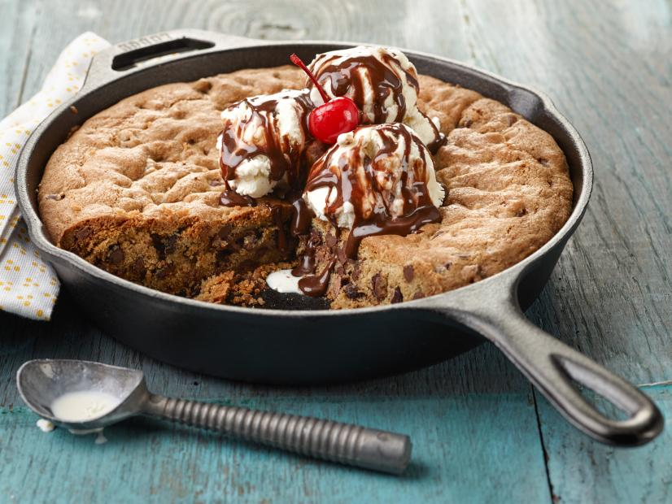

Skillet Cookie Sundae

Description
How can you say no to a warm, freshly-baked chocolate chip skillet cookie topped with ice cream, hot fudge and a maraschino cherry?
Ingredients
- 2 sticks butter, softened
- 1 cup packed brown sugar
- 1/2 cup granulated sugar
- 1 tablespoon vanilla extract
- 2 eggs
- 2 cups all-purpose flour
- 2 heaping teaspoons instant coffee
- 1 1/2 teaspoons baking soda
- 1 teaspoon salt
- 1 cup milk chocolate chips
- 1 cup semisweet chocolate chips
- ice cream, such as vanilla, strawberry, mint chocolate chip or chocolate, for serving
- hot fudge, for serving
- canned whipped cream, for serving
- maraschino cherries, for serving
Steps
- Preheat the oven to 350 degrees F.
- Cream together the butter, brown sugar and granulated sugar in a large bowl. Add the vanilla and eggs, mixing well. Combine the flour, instant coffee, baking soda and salt in a separate bowl. Add the dry ingredients to the wet ingredients in 3 batches, mixing after each one. Stir in the milk and semisweet chocolate chips.
- Spread the mixture into a 10-inch skillet and bake until golden brown, 30 to 40 minutes. Remove the skillet from the oven, top the cookie with several scoops of your favorite ice cream, drizzle on some hot fudge and top with whipped cream and a cherry.